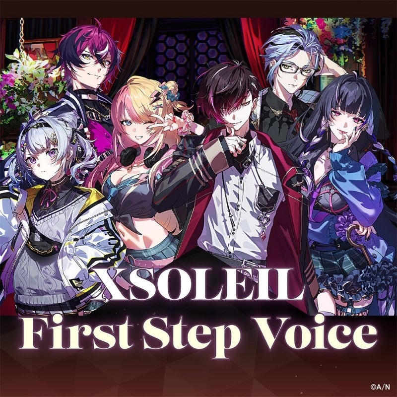

On June 22 2020, Ichikara Inc. rebranded Nijisanji IN to Nijisanji EN. On December 1 2020, It was stated that the official launch of preliminary auditions for Nijisanji. Ongoing auditions ended on December 15th.1
2021
On May 12 2021, Ichikara Inc. announced the debut of Njisanji EN's first wave "LAZULIGHT" with there members: Elira Pendora, Pomu Rainpuff, and Finana Ryugu. On May 16, they began their activites as Niji En's first virtual livers.2
On July 14, They announced their second wave: OBSYDIA. Their members are: Selen Tatsuki, Rosemi Lovelock, and Petra Gurin. they started their activities on July 18.3
On October 6, The third wave of Niji En "Ethyria" was announced. They debuted on October 9 with their members: Millie Parfait Reimu Endou, and Nina Kosaka who is now a former member (graduated on July 8, 20234). They official started their activities on October 9. 5

On December 17, They announced their first all-male group and its 4th wave, Luxiem. Their members consists of Vox Akuma, Luca Kaneshiro Ike Eveland, Shuu Yamino, and their former member Mysta Rias (Graduated on August 27, 2023 6). They Began their activies on December 20. 7
2022
on february 22, Nijisanji En's 5th wave was announced which also consisted of all males, Noctyx. Their members are Alban Knox, Fulur Ovid, Sonny Brisko, Uki Violeta and their former member Yugo Asuma. They started their activies on(Graduated on December 14 2022 8). They began their activities on February 27.9
On July 20, They announced the first mixed-genders and 6th wave of Nijisanji En, ILUNA. They started their activties on July 24 with their members: Kyo Kaneko, Maria Marionette, Aster Arcadia, Aia Amare, Ren Zotto and Scarle Yonaguni. 10
On December 6, Nijisanji En announced their 7th wave of livers, XSOLEIL. Their members are Ver Vermillion, Doppio Dropsythe, Kotoka Torahime, Meloco Kyoran, Hex Haywire, and their former member, Zaion Lanza (Announcement on March 10, 2023 11). They started their activities on December 10. 12
2023
On June 22, They announced their 8th wave, KRISIS. They started their activties on Jun 24 with their members: Yuu Q. Wilson, Vantacrow Bringer, and Vezalius Bandage.13